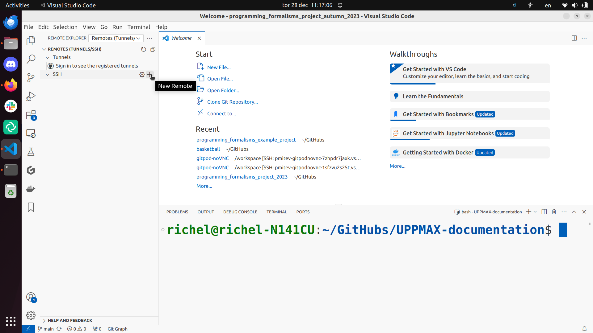
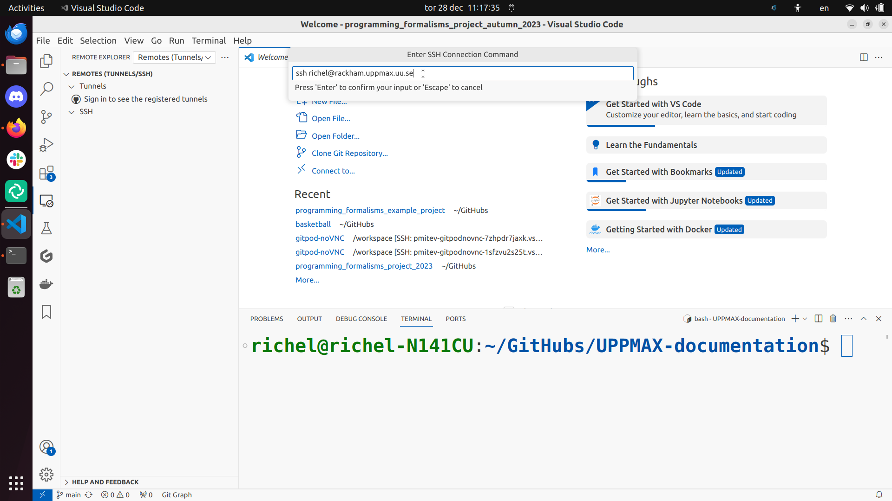
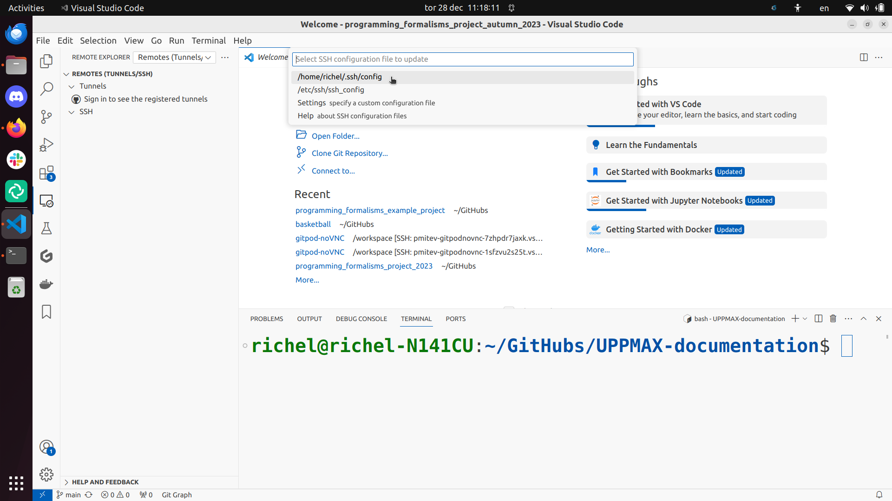

Jupyter is web application that (among other things) allows literature programming for Python. That is, Jupyter allows to create documents where Python code is shown and run and its results shown, surrounded by written text (e.g. English).
Additionally, Jupyter allows to share files and hence includes a file manager.
Jupyter is:
started and run on a server, for example, an interactive node
displayed in a web browser, such as firefox.
Jupyter can be slow when using a remote desktop website (e.g. rackham-gui.uppmax.uu.se or kebnekaise-tl.hpc2n.umu.se).
For HPC2N, as JupyterLab it is only accessible from within HPC2N’s domain, and there is no way to improve any slowness
For LUNARC, you can run Jupyter either in compute nodes through Anaconda or through the LUNARC HPC desktop. The latter is recommended. There is information about Jupyter at LUNARC in their documentation.
For NSC, you can start Thinlinc and run Jupyter on a login node, or use a browser on your local computer with SSH tunneling which could be faster.
If you want to connect to the Jupyter server running on Rackham/Snowy from your own computer, you can do this by using SSH tunneling. Which means forwarding the port of the interactive node to your local computer.
On Linux or Mac this is done by running in another terminal. Make sure you have the ports changed if they are not at the default 8888.
$ssh-L8888:r486:8888username@rackham.uppmax.uu.se
If you use Windows it may be better to do this in the PowerShell instead of a WSL2 terminal.
If you use PuTTY - you need to change the settings in “Tunnels” accordingly (could be done for the current connection as well).
On your computer open the URL you got from step 3. on your webbrowser but replace r486 with localhost i.e. you get something like this
http://localhost:8888/?token=5c3aeee9fbfc75f7a11c4a64b2b5b7ec49622231388241c2
or
http://127.0.0.0:8888/?token=5c3aeee9fbfc75f7a11c4a64b2b5b7ec49622231388241c2
This should bring the jupyter interface on your computer and all calculations and files will be on Rackham.
Similar steps as for Rackham but with the correct port number and hostname pointing to Snowy compute node instead.
$ssh-L8889:s123:8889username@rackham.uppmax.uu.se
On your computer open the URL you got from step 3. on your webbrowser but replace s123 with localhost i.e. you get something like this
http://localhost:8889/tree?token=2ac454a7c5d7376e965ad521d324595ce3d4
or
http://127.0.0.0:8889/tree?token=2ac454a7c5d7376e965ad521d324595ce3d4
Paste the url and it will start the Jupyter interface on your computer and all calculations and files will be on Snowy.
Warning
Running Jupyter in a virtual environment
You could also use jupyter (-lab or -notebook) in a virtual environment.
If you decide to use the –system-site-packages configuration you will get jupyter from the python modules you created your virtual environment with.
However, you won’t find your locally installed packages from that jupyter session. To solve this reinstall jupyter within the virtual environment by force:
$ pipinstall-Ijupyter
and run:
$ jupyter-notebook
Be sure to start the kernel with the virtual environment name, like “Example”, and not “Python 3 (ipykernel)”.
Since the JupyterLab will only be accessible from within HPC2N’s domain, it is by far easiest to do this from inside ThinLinc, so this is highly recommended. You can find information about using ThinLinc at HPC2N’s documentation
At HPC2N, you currently need to start JupyterLab on a specific compute node. To do that you need a submit file and inside that you load the JupyterLab module and its prerequisites (and possibly other Python modules if you need them - more about that later).
To see the currently available versions, do
modulespiderJupyterLab
You then do
modulespiderJupyterLab/<version>
for a specific <version> to see which prerequisites should be loaded first.
Example, loading ``JupyterLab/4.0.5``
moduleloadGCC/12.3.0JupyterLab/4.0.5
Making the submit file
Something like the file below will work. Remember to change the project id after the course, how many cores you need, and how long you want the JupyterLab to be available:
#!/bin/bash#SBATCH -A hpc2n2025-076# This example asks for 1 core#SBATCH -n 1# Ask for a suitable amount of time. Remember, this is the time the Jupyter notebook will be available! HHH:MM:SS.#SBATCH --time=05:00:00# Clear the environment from any previously loaded modules
modulepurge>/dev/null2>&1# Load the module environment suitable for the job
moduleloadGCC/12.3.0JupyterLab/4.0.5
# Start JupyterLab
jupyterlab--no-browser--ip$(hostname)
Where the flags used to the Jupyter command has the following meaning (you can use Jupyter--help and Jupyterlab--help> to see extra options):
lab: This launches JupyterLab computational environment for Jupyter.
–no-browser: Prevent the opening of the default url in the browser.
–ip=<IP address>: The IP address the JupyterLab server will listen on. Default is ‘localhost’. In the above example script I use $(hostname) to get the content of the environment variable for the hostname for the node I am allocated by the job.
Note again that the JupyterLab is only accessible from within the HPC2N domain, so it is easiest to work on the ThinLinc.
Submit the above submit file. Here I am calling it MyJupyterLab.sh
sbatchMyJupyterLab.sh
Get the URL from the SLURM output file.
Wait until the job gets resources allocated. Check the SLURM output file; when the job has resources allocated it will have a number of URLs inside at the bottom.
The SLURM output file is as default named slurm-<job-id>.out where you get the <job-id> when you submit the SLURM submit file (as in item 3. here).
NOTE: Grab the URL with the hostname since the localhost one requires you to login to the compute node and so will not work!
The file will look similar to this:
Note
b-an03 [~]$ cat slurm-24661064.out[I 2024-03-09 15:35:30.595 ServerApp] Package jupyterlab took 0.0000s to import[I 2024-03-09 15:35:30.617 ServerApp] Package jupyter_lsp took 0.0217s to import[W 2024-03-09 15:35:30.617 ServerApp] A `_jupyter_server_extension_points` function was not found in jupyter_lsp. Instead, a `_jupyter_server_extension_paths` function was found and will be used for now. This function name will be deprecated in future releases of Jupyter Server.[I 2024-03-09 15:35:30.626 ServerApp] Package jupyter_server_terminals took 0.0087s to import[I 2024-03-09 15:35:30.627 ServerApp] Package notebook_shim took 0.0000s to import[W 2024-03-09 15:35:30.627 ServerApp] A `_jupyter_server_extension_points` function was not found in notebook_shim. Instead, a `_jupyter_server_extension_paths` function was found and will be used for now. This function name will be deprecated in future releases of Jupyter Server.[I 2024-03-09 15:35:30.627 ServerApp] jupyter_lsp | extension was successfully linked.[I 2024-03-09 15:35:30.632 ServerApp] jupyter_server_terminals | extension was successfully linked.[I 2024-03-09 15:35:30.637 ServerApp] jupyterlab | extension was successfully linked.[I 2024-03-09 15:35:30.995 ServerApp] notebook_shim | extension was successfully linked.[I 2024-03-09 15:35:31.020 ServerApp] notebook_shim | extension was successfully loaded.[I 2024-03-09 15:35:31.022 ServerApp] jupyter_lsp | extension was successfully loaded.[I 2024-03-09 15:35:31.023 ServerApp] jupyter_server_terminals | extension was successfully loaded.[I 2024-03-09 15:35:31.027 LabApp] JupyterLab extension loaded from /hpc2n/eb/software/JupyterLab/4.0.5-GCCcore-12.3.0/lib/python3.11/site-packages/jupyterlab[I 2024-03-09 15:35:31.027 LabApp] JupyterLab application directory is /cvmfs/ebsw.hpc2n.umu.se/amd64_ubuntu2004_skx/software/JupyterLab/4.0.5-GCCcore-12.3.0/share/jupyter/lab[I 2024-03-09 15:35:31.028 LabApp] Extension Manager is 'pypi'.[I 2024-03-09 15:35:31.029 ServerApp] jupyterlab | extension was successfully loaded.[I 2024-03-09 15:35:31.030 ServerApp] Serving notebooks from local directory: /pfs/stor10/users/home/b/bbrydsoe[I 2024-03-09 15:35:31.030 ServerApp] Jupyter Server 2.7.2 is running at:[I 2024-03-09 15:35:31.030 ServerApp] http://b-cn1520.hpc2n.umu.se:8888/lab?token=c45b36c6f22322c4cb1e037e046ec33da94506004aa137c1[I 2024-03-09 15:35:31.030 ServerApp] http://127.0.0.1:8888/lab?token=c45b36c6f22322c4cb1e037e046ec33da94506004aa137c1[I 2024-03-09 15:35:31.030 ServerApp] Use Control-C to stop this server and shut down all kernels (twice to skip confirmation).[C 2024-03-09 15:35:31.039 ServerApp] To access the server, open this file in a browser: file:///pfs/stor10/users/home/b/bbrydsoe/.local/share/jupyter/runtime/jpserver-121683-open.html Or copy and paste one of these URLs: http://b-cn1520.hpc2n.umu.se:8888/lab?token=c45b36c6f22322c4cb1e037e046ec33da94506004aa137c1 http://127.0.0.1:8888/lab?token=c45b36c6f22322c4cb1e037e046ec33da94506004aa137c1[I 2024-03-09 15:35:31.078 ServerApp] Skipped non-installed server(s): bash-language-server, dockerfile-language-server-nodejs, javascript-typescript-langserver, jedi-language-server, julia-language-server, pyright, python-language-server, python-lsp-server, r-languageserver, sql-language-server, texlab, typescript-language-server, unified-language-server, vscode-css-languageserver-bin, vscode-html-languageserver-bin, vscode-json-languageserver-bin, yaml-language-server
from a browser within the ThinLinc session. <newest> is a number that you find by looking in the directory .local/share/jupyter/runtime/ under your home directory.
Or, to access the server you can copy and paste the URL from the file that is SIMILAR to this:
#!/bin/bash
#SBATCH -A hpc2n2025-076
# This example asks for 1 core
#SBATCH -n 1
# Ask for a suitable amount of time. Remember, this is the time the Jupyter notebook will be available! HHH:MM:SS.
#SBATCH --time=05:00:00
# Clear the environment from any previously loaded modules
module purge > /dev/null 2>&1
# Load the module environment suitable for the job
module load GCC/12.3.0 Python/3.11.3 OpenMPI/4.1.5 SciPy-bundle/2023.07 matplotlib/3.7.2 Seaborn/0.13.2 JupyterLab/4.0.5
# Start JupyterLab
jupyter lab --no-browser --ip $(hostname)
Get the URL from the SLURM output file (slurm-<job-id>.out).
It will show some text, including telling you to open a url in a browser (inside ThinLinc/on Tetralith). If you just wait, it will open a browser with Jupyter.
VS Code is a powerful and flexible IDE that is popular among developers for its ease of use and flexibility. It is designed to be a lightweight and fast editor that can be customized to suit the user’s needs. It has a built-in terminal, debugger, and Git integration, and can be extended with a wide range of plugins.
VS Code can be downloaded and installed on your local machine from the VS Code website. It is also available on the HPC center resources, but the installation process is different for each center.
VS Code is available on ThinLinc on UPPMAX and LUNARC only. On HPC2N and NSC, you will have to install it on your own laptop.
At UPPMAX(Rackham) load it using moduleloadVSCodium, this is an open source version of VS Code. At LUNARC(Cosmos) you can find it under Applications->Programming->Visual Studio Code.
However, VS Code is best used on your local machine, as it is a resource-intensive application that can slow down the ThinLinc interface. The VS Code Server can be installed on all the HPCs that give your the ability to run your code on the HPCs but edit it on your local machine.
Similarly, you can also install your faviroute extensions on the HPCs and use them on your local machine. Care should be taken while assigning the correct installation directories for the extensions because otherwise they get installed in home directory and eat up all the space.
Install VS Code on your local machine and follow the steps below to connect to the HPC center resources.
Steps to connect VS Code via SSH

Type ssh [username]@rackham.uppmax.uu.se where [username] is your UPPMAX username, for example, ssh sven@rackham.uppmax.uu.se.
This will change as per the HPC center you are using:

Use the ~/.ssh/config file:

Click on ‘Connect’:
When you first establish the ssh connection to Rackham, your VSCode server directory .vscode-server will be created in your home folder /home/[username].
This also where VS Code will install all your extentions that can quickly fill up your home directory.
Install and manage Extensions on remote VSCode server
Go to Command Palette Ctrl+Shift+P or F1. Search for Remote-SSH: Settings and then go to Remote.SSH: Server Install Path. Add Item as remote host rackham.uppmax.uu.se and Value as project folder in which you want to install all your data and extensions /proj/uppmax202x-x-xx/nobackup (without a trailing slash /).
If you already had your vscode-server running and storing extensions in home directory. Make sure to kill the server by selecting Remote-SSH: KIll VS Code Server on Host on Command Palette and deleting the .vscode-server directory in your home folder.
You can sync all your local VSCode extensions to the remote server after you are connected with VSCode server on HPC resource by searching for Remote: Install Local Extensions in ‘SSH: rackham.uppmax.uu.se’ in Command Palette. You can alternatively, go to Extensions tab and select each individually.
Request allocation in either HPC compute node depending on your need, for that use interactive (or salloc) slurm command. Load the correct module on HPC resource that contains the interpreter you want on your VSCode. For example in case you need ML packages and python interpreter on Rackham/Snowy, do module load python_ML_packages. Check the file path for python interpreter by checking whichpython and copy this path. Go to Command Palette Ctrl+Shift+P or F1 on your local VSCode. Search for “interpreter” for python, then paste the path of your interpreter/kernel.
venv or conda environments are also visible on VSCode when you select interpreter/kernel for python or jupyter server.
For jupyter, you need to start the server on the HPC resource first, check Jupyter section on how to do that. Copy the jupyter server URL which goes something like http://s193.uppmax.uu.se:8888/tree?token=xxx (in case of Snowy), click on Select Kernel on VSCode and select Existing Jupyter Server. Past the URL here and confirm your choice.
The application will automatically perform port forwarding to your local machine from the compute nodes over certain ports. Check the Terminal->Ports tab to see the correct url to open in your browser.
NOTE: Selecting kernels/interpreter does not work currently on HPC2N.
Spyder is a powerful and flexible IDE originally developed to be the main scripting environment for scientific Anaconda users. It is designed to enable quick and easily repeatable experimentation, with automatic syntax checking, auto-complete suggestions, a runtime variable browser, and a graphics window that makes plots easy to manipulate after creation without additional code.
Spyder is available independent of Anaconda, but conda is still the recommended installer. Packages from the conda-forge source repo are still open-source, so conda is still usable on some facilities despite the recent changes in licensing. It is also possible to build a pip environment with Spyder, although this is only recommended for experienced Python users running on Linux operating systems.
On LUNARC, the recommended way to use Spyder is to use the On-Demand version in the Applications menu, under Applications-Python. All compatible packages should be configured to load upon launching, so you should only have to specify walltime and maybe a few extra resource settings with the GfxLauncher so that spyder will run on the compute nodes. Refer to the Desktop On Demand documentation to help you fill in GfxLauncher prompt.
Avoid launching Spyder from the command line on the login node.
The only available version of Spyder on Kebnekaise is Spyder/4.1.5 for Python-3.8.2 (the latest release of Spyder available for users to install in their own environments is 6.0.2). Python 3.8.2 is associated with compatible versions of Matplotlib and Pandas, but not Seaborn or any of the ML packages to be covered later. To run the available version of Spyder, run the following commands:
ml GCC/9.3.0 OpenMPI/4.0.3 Python Spyderspyder3
If you want a newer version with more and newer compatible Python packages, you will have to create a virtual environment.
Spyder is not available centrally on Rackham. It will have to be installed in your (conda) virtual environment.
When you open Spyder, you should see something like the figure below. There should be a large pane on the left for code, and two smaller panes on the right. Each of the 3 panes have their own button with 3 horizontal lines (the menu button or “burger icon”) in the top right, each with additional configuration options for those panes.
Help displays information about commands and starts up with a message instructing you on how to use it.
Variable explorer shows a table of currently defined variables, their datatypes, and their current values at runtime. It updates every time you either run a script file or run a command in the IPython console.
Files shows the file tree for your current working directory
Depending on the version , there may also be a Plots tab for displaying and adjusting graphics produced with, e.g. Matplotlib.
You can move any of these tabs into separate windows by clicking the menu (burger) button and selecting “Undock”. This is especially helpful for the plotting tab.
The bottom right pane shows the IPython console and a history tab. The IPython console is your Python command line, and runs in your current working directory unless changed with os.chdir(). The default path is whatever directory you were in when you launched Spyder, but that can be changed in Preferences. If you run a script file that you’ve saved to a different directory using the green arrow icon on the menu ribbon, the IPython console will switch your working directory to the one containing that script. The history tab stores the last 500 lines of code excuted in the IPython console.
Most of the icons along the top menu bar under the verbal menu are running and debugging commands. You can hover over any of them to see what they do.
Font and icon sizes. If you are on Thinlinc and/or on a Linux machine, Spyder may be uncomfortably small the first time you open it. To fix this,
Click the icon shaped like a wrench (Preferences) or click “Tools” and then “Preferences”. A popup should open with a menu down the left side, and the “General” menu option should already be selected (if not, select it now).
You should see a tab titled “Interface” that has options that mention “high-DPI scaling”. Select “Set custom high-DPI scaling” and enter the factor by which you’d like the text and icons to be magnified (recommend a number from 1.5 to 2).
Click “Apply”. If the popup in the next step doesn’t appear immediately, then click “OK”.
A pop-up will appear that says you need to restart to view the changes and asks if you want to restart now. Click “Yes” and wait. The terminal may flash some messages like QProcess:Destroyedwhileprocess("/hpc2n/eb/software/Python/3.8.2-GCCcore-9.3.0/bin/python")isstillrunning.", but it should restart within a minute or so. Don’t interrupt it or you’ll have to start over.
The text and icons should be rescaled when it reopens, and should stay rescaled even if you close and reopen Spyder, as long as you’re working in the same session.
(Optional but recommended) Configure plots to open in separate windows. In some versions of Spyder, there is a separate Plotting Pane that you can click and drag out of its dock so you can resize figures as needed, but if you don’t see that, you will probably want to change your graphics backend. The default is usually “Inline”, which is usually too small and not interactive. To change that,
Click the icon shaped like a wrench (Preferences) or click “Tools” and then “Preferences” to open the Preferences popup.
In the menu sidebar to the left, click “IPython console”. The box to the right should then have 4 tabs, of which the second from the left is “Graphics” (see figure below).
Click “Graphics” and find the “Graphics backend” box below. In that box, next to “Backend” there will be a dropdown menu that probably says “Inline”. Click the dropdown and select “Automatic”.


{kind=link}
{kind=link}